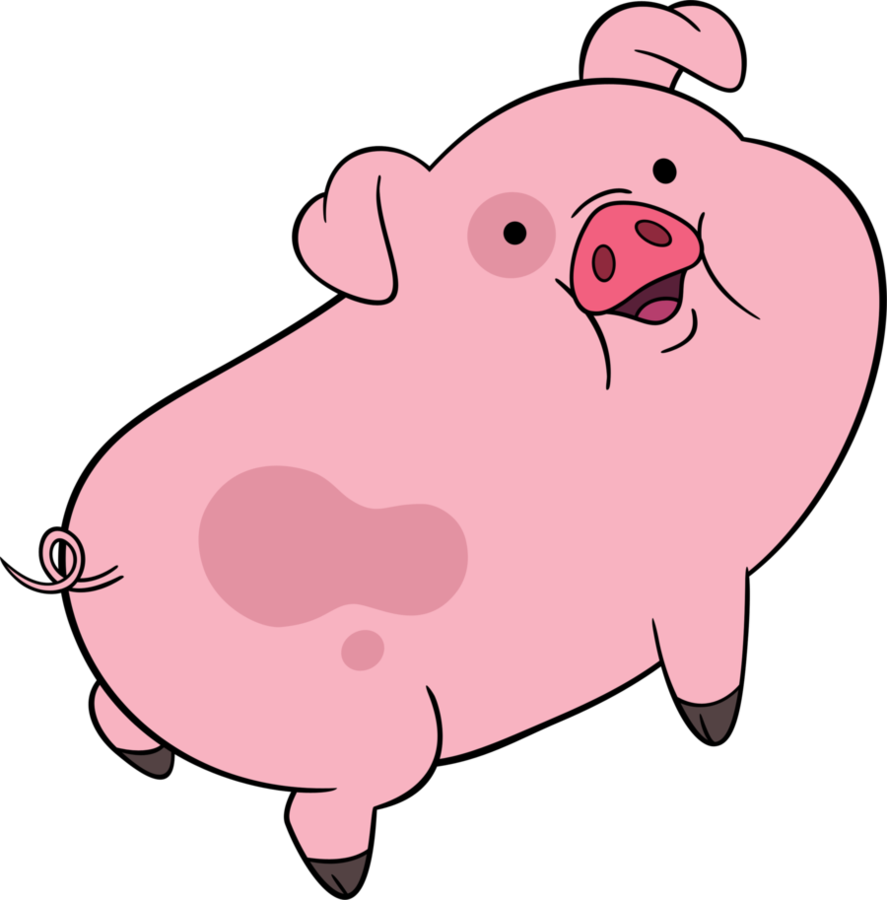
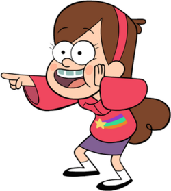

- Home
- Characters
- Video
- Bonus Media
- Promotional Material
- Animation
- Contact


Mabel and Waddles' Friendship
Mabel Pines is one of the cheerful twin protagonists of Gravity Falls, known for her optimism, colorful sweaters, energetic imagination, and deep affection for her friends and family. Among her closest bonds is her relationship with Waddles, a pet pig she instantly adores after winning him at the Mystery Fair in the episode “The Time Traveler’s Pig.” Mabel first meets Waddles during a pig competition at the fair, where she enters him almost on a whim and quickly becomes emotionally attached, seeing him as the perfect companion. When she learns that Waddles would otherwise be given away, she becomes determined to keep him, even choosing her friendship with him over changing events to secure a crush’s affection. From then on, Waddles becomes her constant sidekick throughout the series, symbolizing Mabel’s loyalty, empathy, and childlike capacity to love wholeheartedly.